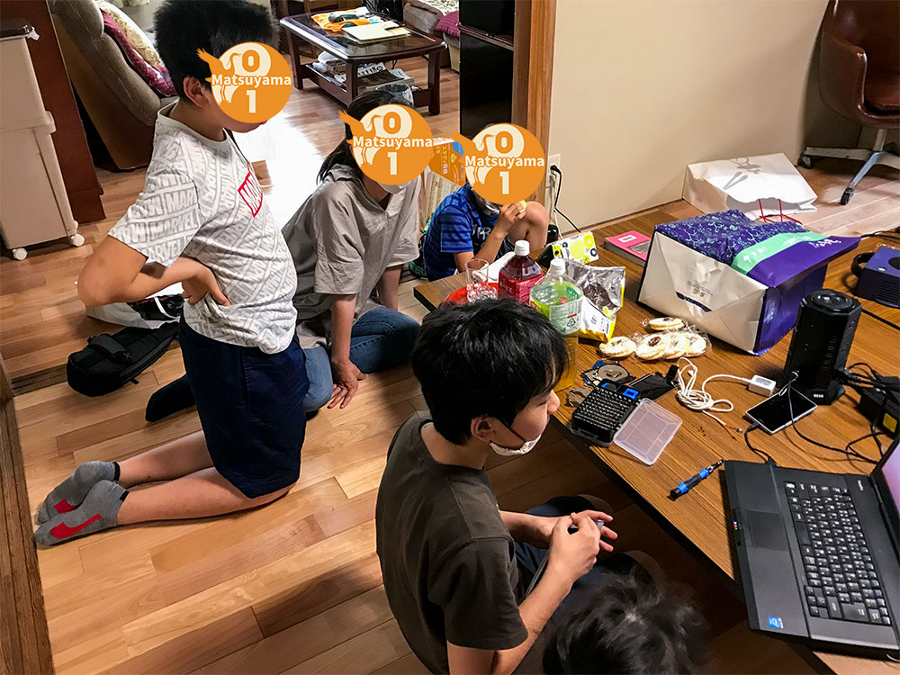
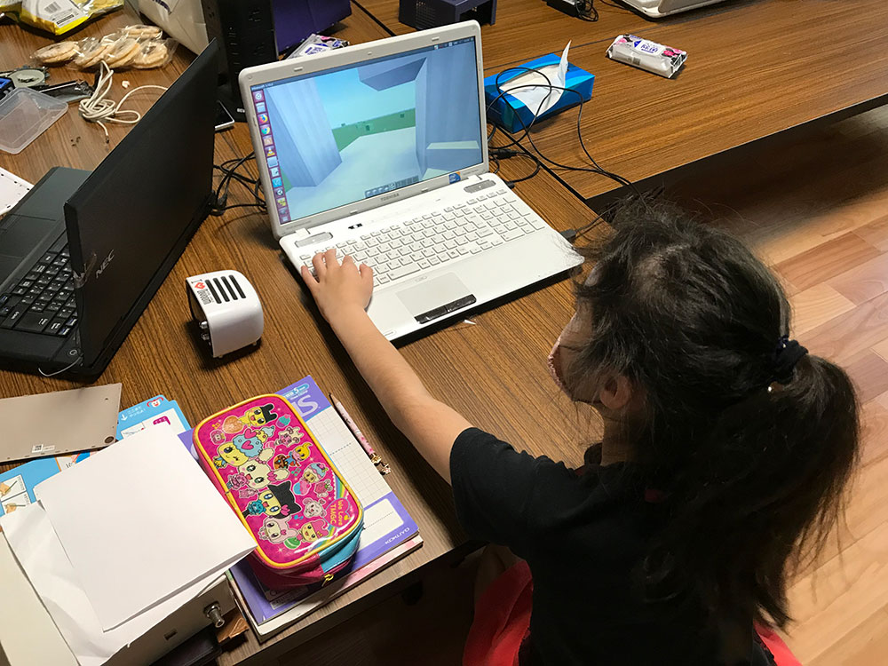

6/20(土)CoderDojo松山を開催いたしました。
参加者は、Nija5名、保護者3名で、内訳は下記の通り。
- 〇お絵かき＋マイクラ
- 〇Scrach＋EV3
- 〇HDD、タブレットの分解
- 〇ゲームキューブPC作成。
- 〇ドローン +
- 〇ラズパイでマルチサーボコントロール(保護者枠)


そのほか、分解したタブレットをみんなでとどめをさしたり盛り上がりました。
基本的にNija、保護者がまだ自分の目標を模索している状態です。そのため、保護者の方にもロボットやプログラミングの取り組みについて都度説明しながらとなりますが、気に入っていただけているようですが、まだこれからです。
開催場所のオーナーの方も様子をみて、みんなが楽しそうに取り組んでいる姿を見て継続利用に関して承諾いただけたのが助かります。
そのため、新型コロナ対応も解除方向に向かっていますので会場公開できそうです。
インターネット環境も来月から開通の予定ですので来月から本格的に取り組めそうです。